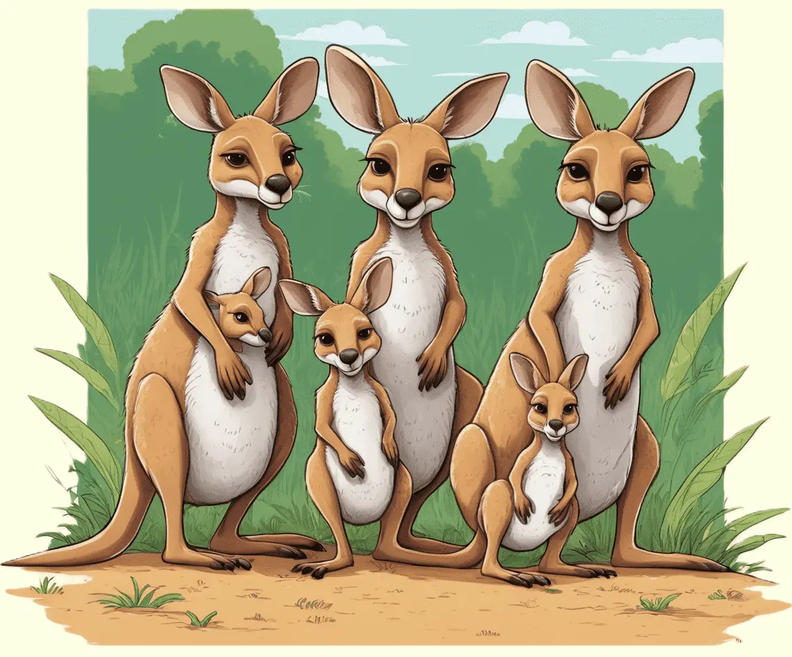

Das Känguru, ein faszinierendes Beuteltier, zeichnet sich durch seine starken Hinterbeine und den Beutel aus.
Entdecke die einzigartige Welt dieser sprunggewaltigen Tiere und erfahre, wie sie in den Weiten Australiens leben.

Hüpfende Symbole des Outbacks
Die Kängurus sind faszinierende Beuteltiere, die das Bild des australischen Outbacks prägen. Mit ihren starken Hinterbeinen und dem kräftigen Schwanz sind sie wahre Hüpfmeister. Das charakteristische Bild eines Kängurus, das mit mächtigen Sprüngen über die Grasflächen hüpft, ist nicht nur beeindruckend, sondern auch ein Symbol der australischen Tierwelt.
Kängurus haben angepasste Hinterbeine mit kräftigen Muskeln und einer speziellen Sehne, die es ihnen ermöglichen, weite Sprünge zu machen. Diese erstaunlichen Tiere können mit erstaunlichen Geschwindigkeiten von bis zu 70 km/h hüpfen und dabei scheinbar mühelos über Hindernisse springen.
Gemeinschaftsleben in der Wildnis
Obwohl Kängurus oft als Einzelgänger betrachtet werden, haben sie dennoch eine soziale Struktur. Sie leben oft in Gruppen, die als "Mob" bezeichnet werden, und haben eine komplexe soziale Hierarchie. Die Weibchen, auch als "Flyer" bezeichnet, tragen ihre Jungen im Beutel und kümmern sich liebevoll um sie.
Ein faszinierendes Merkmal der Kängurus ist ihre Fähigkeit, sich auf ihren Hinterbeinen aufzurichten. Diese "boxenden" Kämpfe zwischen Männchen sind nicht nur ein Mittel zur Dominanzfeststellung, sondern auch ein spektakuläres Schauspiel.